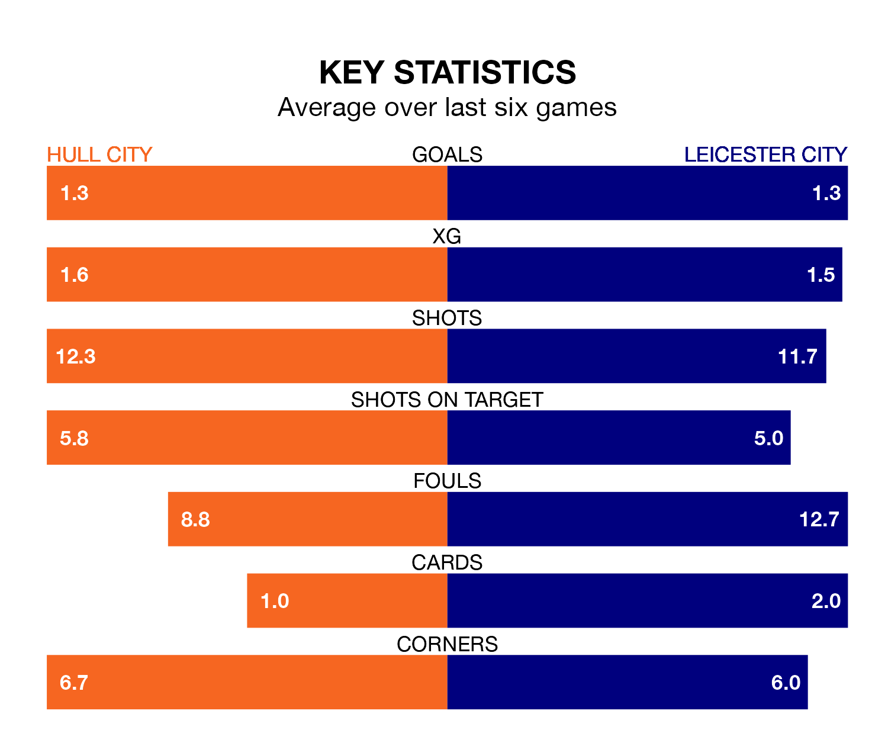

Hull City face Leicester City on Saturday seeking to protect their long unbeaten run in the EFL Championship.
The Tigers are unbeaten in six, with three wins and three draws, ahead of the 3pm kick-off.
They face a Leicester team who have won three and lost three over the same number of games.
Leicester are top of the table after 36 games, of which they have won 26 and drawn three, earning 81 points.
Hull are five places behind Leicester City in sixth, with 16 wins and nine draws putting them on 57 points.
With 72 goals in 36 games so far this season, the Foxes are the league's second-highest scorers with 2.0 goals per game. And they are conceding fewer than average, letting in 31 goals at a rate of 0.9 per game.
Hull City, meanwhile, are average scorers, with 1.4 goals per game. They have conceded 1.2 goals per game.
In the last 10 years, Hull and Leicester have played each other on seven occasions. Hull won two of them, Leicester three, and they drew twice.
On average, the Tigers scored 0.7 goals and the Foxes 1.4 in those matches.
Their last meeting was on September 2, when Hull won 1-0 away.
With Mads Hermansen between the sticks, the visitors can rely on one of the league's safest pair of hands. He has kept 12 clean sheets in his 35 appearances this season, and only two other 'keepers – West Bromwich Albion's Alex Palmer and Leeds United's Illan Meslier – have been able to prevent the opposition scoring on more occasions in the EFL Championship.
In the Tigers' net, Ryan Allsop has eight clean sheets in 27 games. He has conceded a goal every 87 minutes, 40% more often than the 126 minutes between goals for Hermansen.
Hull's last match was on Tuesday, a 1-1 draw against Birmingham City, with Ozan Tufan getting the goal for the Tigers.
Leicester beat Sunderland 1-0 last time out, also on Tuesday, with Jamie Vardy on the scoresheet.
Updated: 09:34 (UTC), 08/03/24